A full record of our key projects across commercial, industrial, residential and data centre sectors throughout Malaysia.
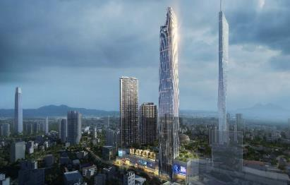
Phase 1A: 36-storey service apartment · Phase 1B: 59-storey service apartment · Phase 2: 6-storey shopping mall · Phase 3: 9-storey office + 57-storey service apartment + 9-storey hotel · Phase 4: Two 71-storey service apartment towers. Jalan Pudu, Kuala Lumpur.
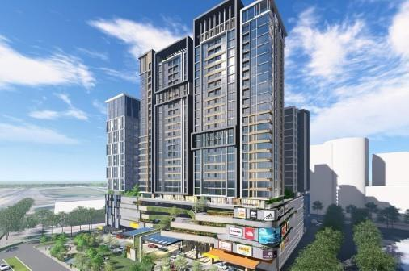
Proposed service apartment development. Lot 50700, Mukim Bandar Subang Jaya, Daerah Petaling, Selangor.
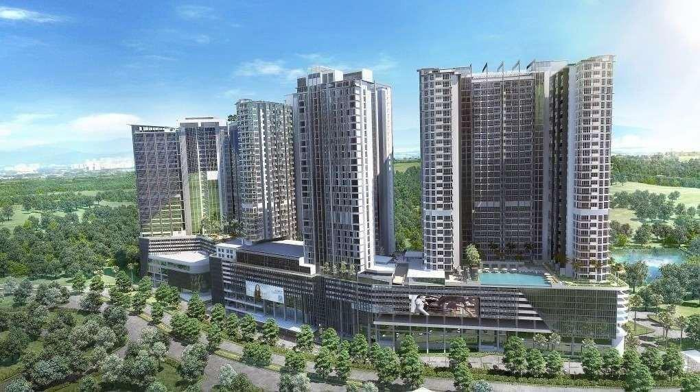
1 block 23-storey office building + 2 blocks 29-storey SOFO/Hotel buildings. Medini, Johor Bahru.
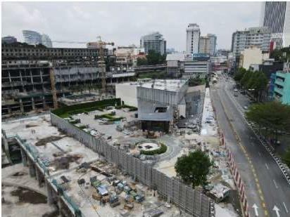
Cadangan membina 1 unit pejabat jualan sementara 2 tingkat. Lot 738 & 739, Seksyen 56, Wilayah Persekutuan, Kuala Lumpur.
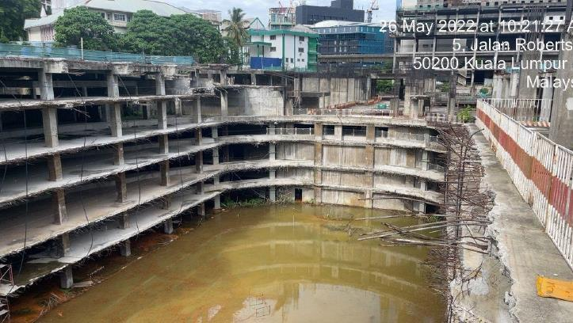
Cadangan merobohan sebahagian struktur sedia ada bagi cadangan pembangunan bercampur. Lot 225, 242 & 288, Seksyen 56, Wilayah Persekutuan, Kuala Lumpur.
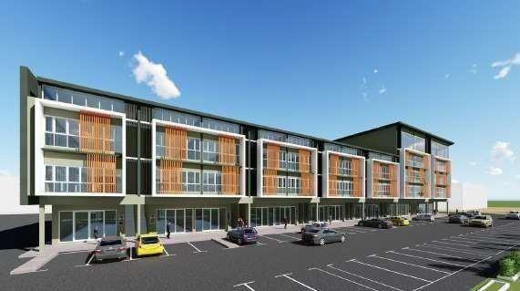
Phase 3: 22 units 3-storey shop-offices · Phase 4: 20 units 3-storey shop-offices · Phase 5: 21 units 3-storey shop-offices · Phase 6 & 7: 54 units 3-storey offices + 4 units 5-storey shop-offices. Bandar Tasik Puteri, Selangor.
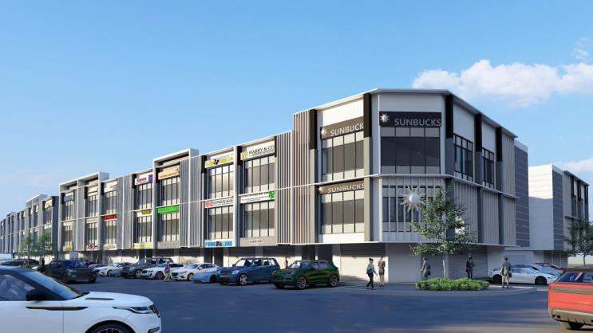
Phase 1: 4 units 3-storey shop-offices · Phase 2: 38 units 3-storey shop-offices · Phase 3: 54 units 3-storey shop-offices. Bandar Tasik Puteri, Gombak, Selangor.
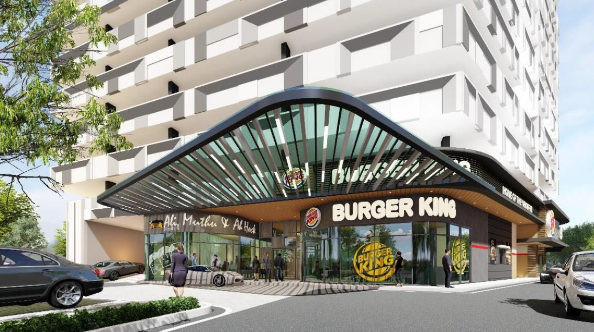
25-storey mixed development — 3 retail units (ground floor), multiple office units, 10-level podium parking. Shah Alam, Selangor.
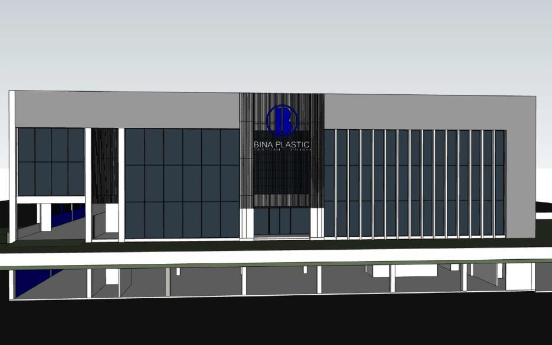
Multiple 2-storey factory extensions, industrial warehouse facilities, plastic pipe storage facilities, and worker quarters across multiple sites. Kg Baru Balakong, Hulu Langat, Selangor.
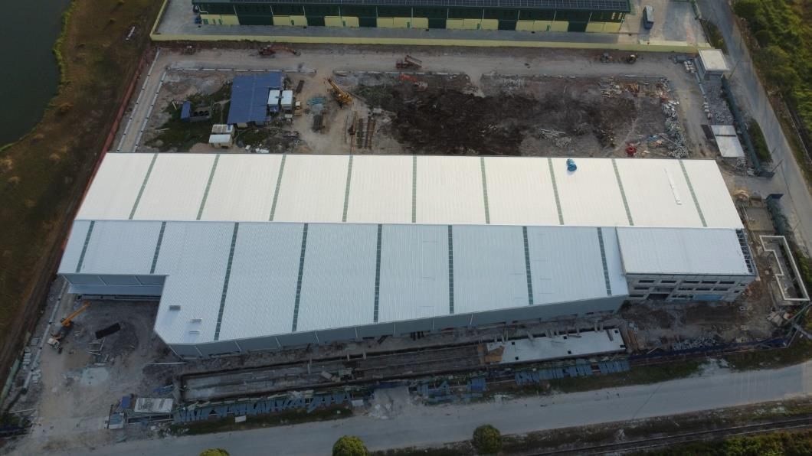
5.713-acre cleanroom panel manufacturing facility. Lot 26906, Mukim Asam Kumbang, Larut & Matang, Perak.
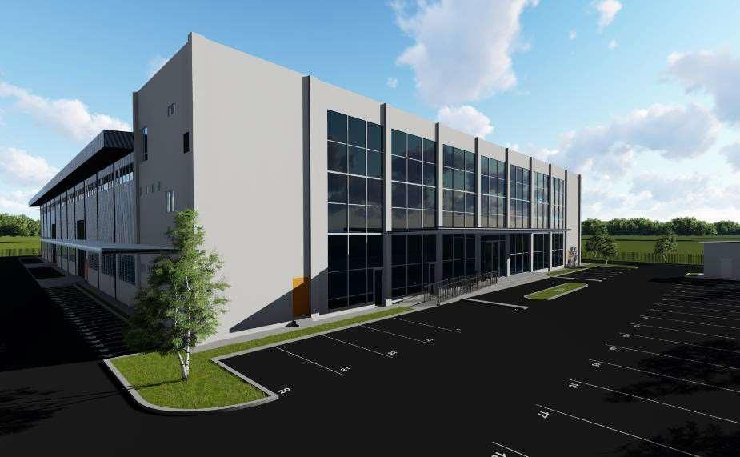
3-storey office with showroom + 3-storey warehouse with canteen. Lot 42807, Bandar Sri Sendayan, Negeri Sembilan.
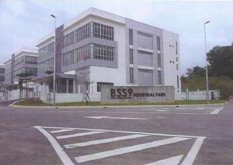
4 units 3-storey shop-offices + 45 units 2-storey shop-offices. Seksyen 27, Shah Alam, Selangor.
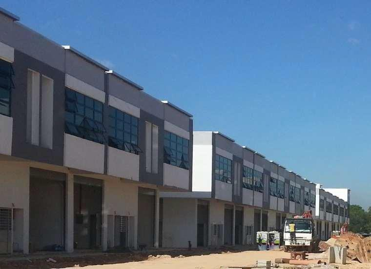
Industrial terrace buildings (single and double units) and industrial cluster units. Seri Kembangan, Selangor.
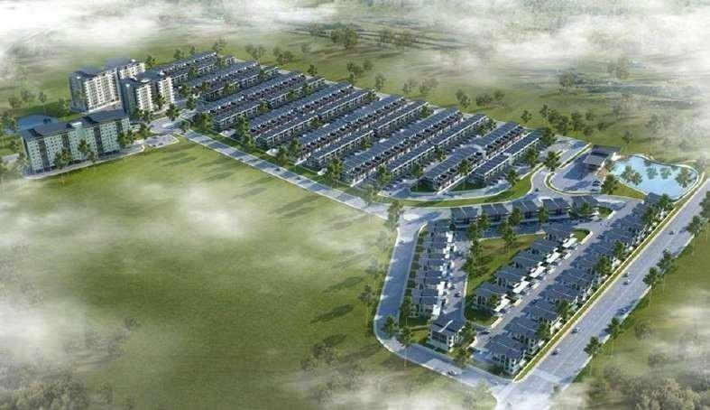
Phase 1: 37-storey apartment block (590 units) · Phase 2: 590 service apartment units (413 free-hold, 177 Rumah Selangorku) · Phase 3: 426 service apartment units (288 free-hold, 128 Rumah Selangorku). Hulu Langat, Selangor.
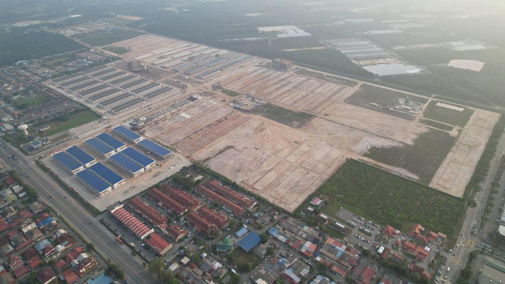
Mixed residential and commercial development with multiple housing types. Jenjarom, Selangor.
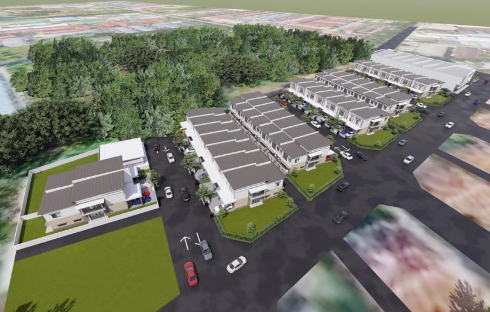
50-acre residential development. Lot PT 26703, Rawang, Selangor.
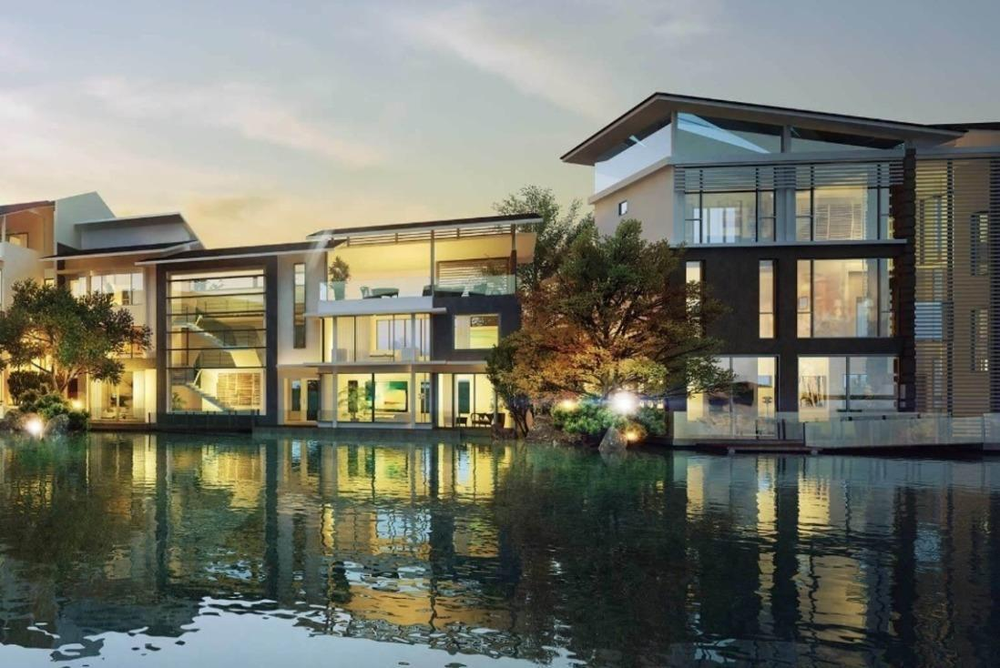
Strata land houses, free-market apartments, Rumah Selangorku units (Types A, B, D), and commercial plots. Lot 92345–92346, Putra Heights, Subang Jaya, Selangor.
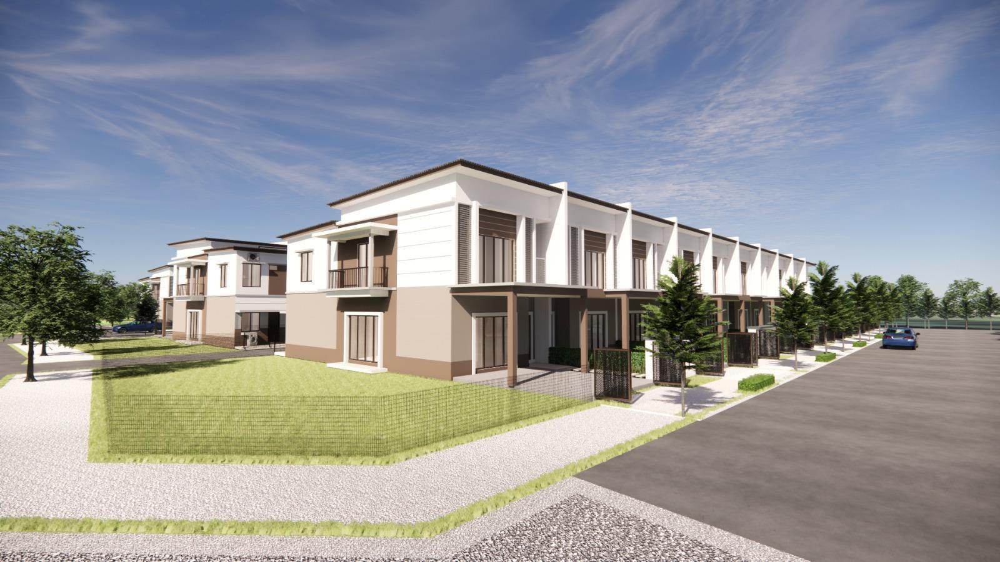
52 units 2-storey terrace houses (20'×70'), Rumah Selangorku apartments, and shop-offices. Taman Lestari Permai, Puchong and Klang, Selangor.
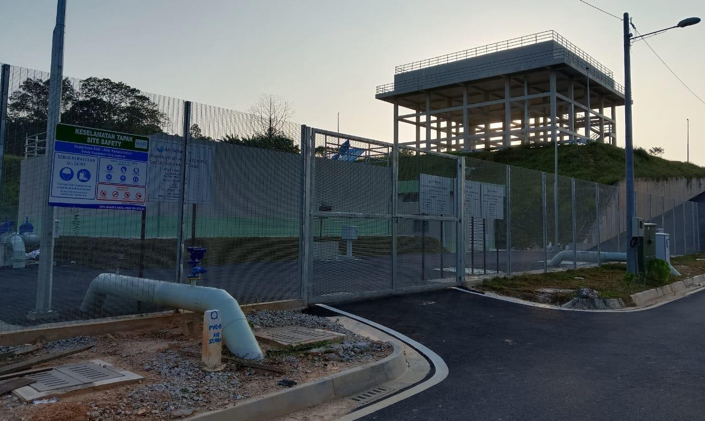
72 units of townhouses + utility infrastructure (PPU 33kV, pump houses, water tanks). Lot 4111, Mukim Rawang, Gombak, Selangor.
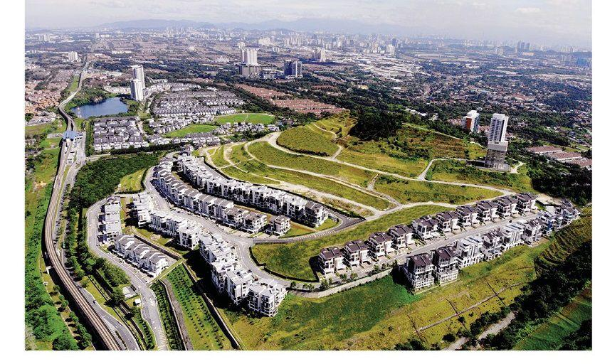
100 units landed houses · 174 units semi-detached houses · 616-unit service apartments · 76-unit condominiums · international school · hostel · club house. Putra Heights, Subang Jaya, Selangor.
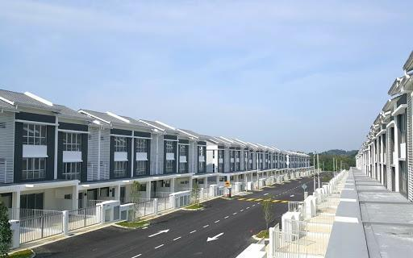
25-acre residential development. Lot 4107–4124, Mukim Kuang, Daerah Gombak, Selangor.
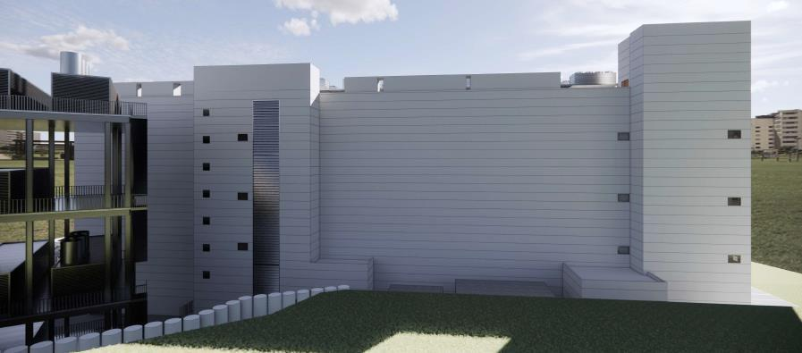
Phase 1: 3-storey data centre + office, 4-storey genset structure, pump houses, substation; future phases planned. PTD 35549, Jalan Digital Utama, KIDEX, Johor.
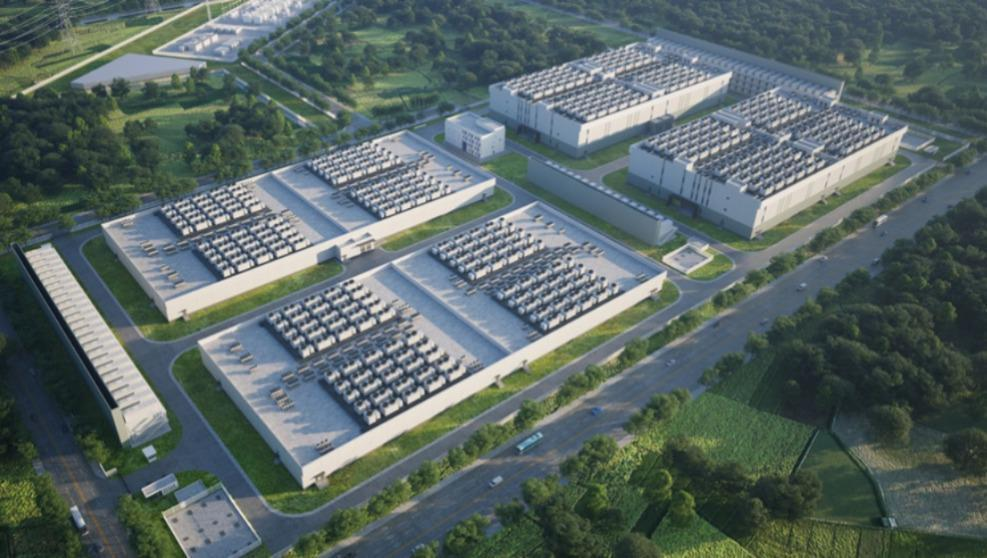
Phase 1A: 2 blocks 1-storey data centre · Phase 1B: electrical substation + pump houses · Phase 2: 2 blocks 3-storey data centre + 4-storey facility building. Lot 2699, Johor Bahru.
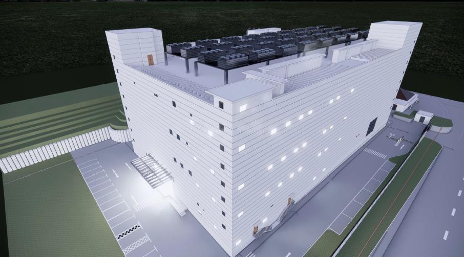
Multiple phases with data centre buildings (8 storeys + partial basement), power generation and utility infrastructure. Technology Park Malaysia, Kuala Lumpur.
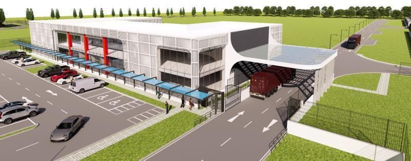
2 units 132kV sub-station buildings · 2-storey data centre building · 2-storey office building with guard house · 48 genset containers. PTD 32639, KIDEX, Johor.
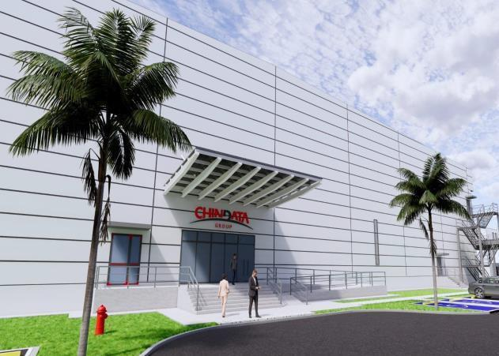
2-storey data centre building. Sedenak, Johor.
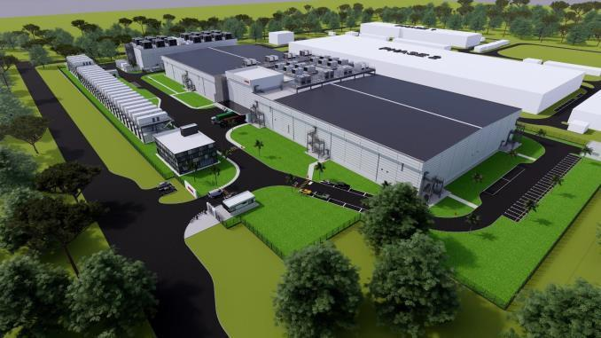
Phase 1: 1-storey DC + mezzanine, 2-storey office, 7 utility buildings, generator rooms · Phase 2: 3-storey DC + 3-storey office + 2-storey generator building · Phase 3: 2-storey DC + 2-storey office + 37 genset containers. Sedenak, Johor.
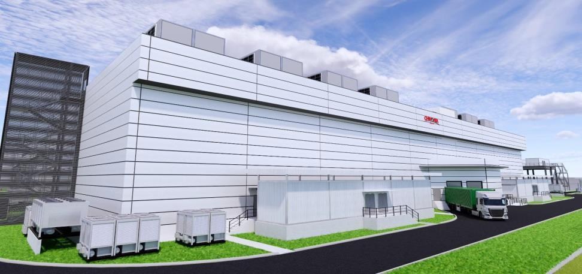
Multiple data centre buildings across phases 5 and 6. Sedenak, Johor.
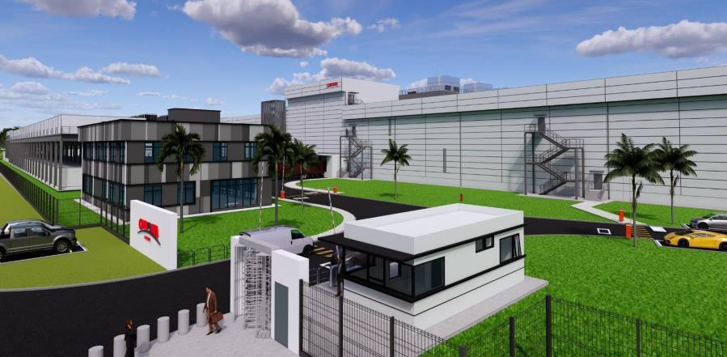
Phase 1: 2 blocks 2-storey data centre + substation · Phase 2: 1 block 2-storey data centre · Phase 3: 2-storey 275kV/33kV switch consumer building. KIDEX, Kulai, Johor.